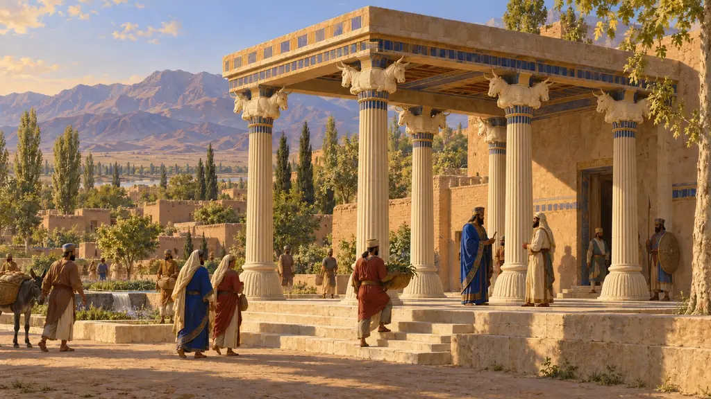
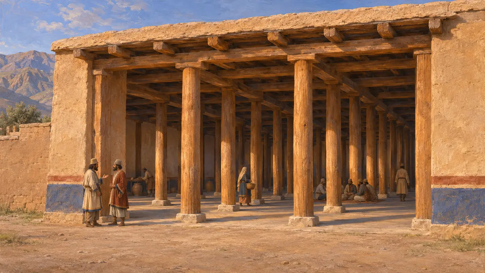
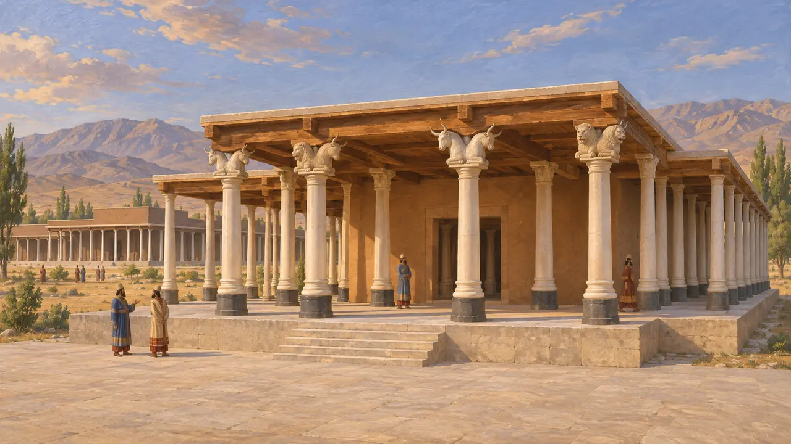
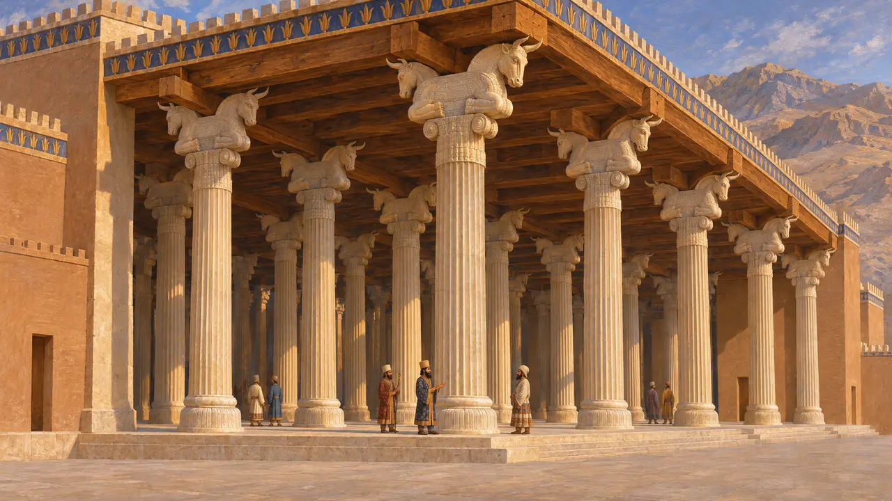
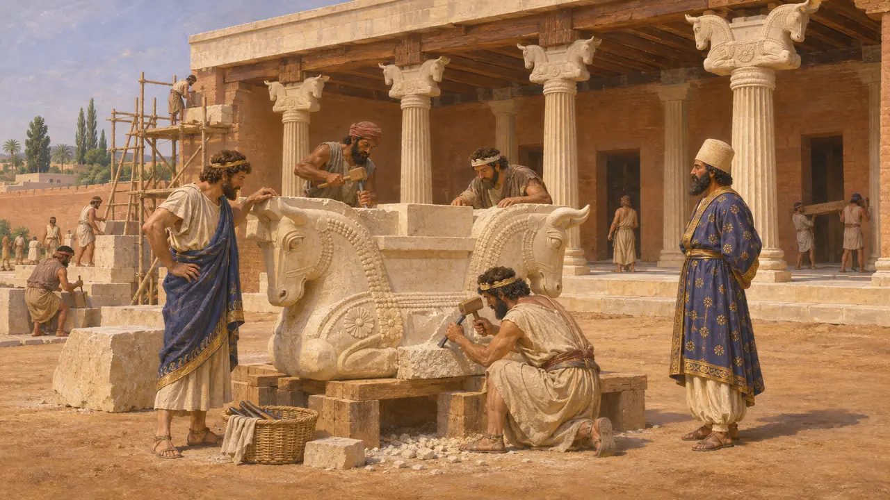
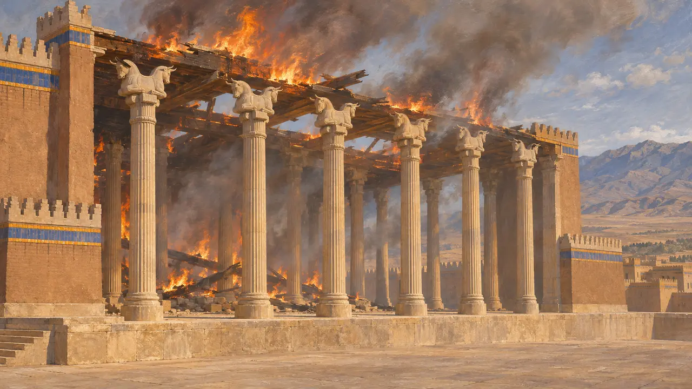

Pórtico de Colunas
Pórtico de colunas dos palácios reais persas, c. 540-480 AEC
Um pórtico de colunas era uma galeria profunda de colunas altas e esguias que sustentavam um telhado plano de madeira, erguida diante de um palácio ou salão. Sob Ciro, Dario e Xerxes, tornou-se a marca da arquitetura real persa. Seus capitéis eram esculpidos como as partes dianteiras de animais em pares, quase sempre touros, que seguravam as vigas do telhado entre os pescoços.
No jogo: O jogo mostra um pórtico sombreado de colunas altas com capitéis de touros duplos e o classifica como habitação. Historicamente, pórticos assim ficavam à frente de palácios reais e salões de audiência, não de casas comuns, então esse posicionamento é uma simplificação.

Salões de colunas antes dos reis persas
Nos registrosEscavações no oeste do Irã mostram que salões com fileiras de colunas de madeira foram construídos muito antes de Ciro. Exemplos foram encontrados em Hasanlu, ao sul do lago Urmia, e em Godin Tepe e Nush-i Jan, na Média, datados aproximadamente dos séculos IX a VII. O pórtico persa provavelmente nasceu dessa tradição mais antiga das terras altas, agora trabalhada em grande parte em pedra.
D. Stronach, Pasargadae, 1978

Os pórticos de Ciro em Pasárgada
Nos registrosEm Pasárgada, o Palácio S tinha um salão central de oito colunas com pórticos nos quatro lados. O Palácio P tinha um salão de trinta colunas com dois longos pórticos. As bases de suas colunas combinam, em contraste, pedra escura e clara, e os fustes são de calcário branco. Fragmentos de capitéis esculpidos com pares de partes dianteiras de animais, entre eles touros e leões, estão provavelmente entre os mais antigos exemplos conhecidos dessa forma.
D. Stronach, Pasargadae, 1978

Os grandes pórticos de Persépolis e Susa
Nos registrosEm Persépolis, a Apadana iniciada por Dario tinha pórticos em três lados, com colunas de pedra de cerca de 20 metros de altura. Seus capitéis mostram touros dorso com dorso e, em outras partes do terraço, leões e grifos chifrudos, com vigas de madeira apoiadas no encaixe entre as cabeças. Em Susa, a carta de Dario diz que o cedro veio do Líbano e as colunas de pedra, de uma aldeia em Elam.
E. Schmidt, Persepolis I, 1953; DSf

Quem os projetou e esculpiu
DisputadoA carta de Dario em Susa aponta jônios e sardianos como os canteiros. Nylander encontrou em Pasárgada marcas de ferramentas e técnicas de alvenaria lídias e jônias. Os historiadores divergem sobre o quanto o próprio projeto devia a modelos jônios, egípcios ou iranianos. A maioria vê hoje uma combinação deliberada, promovida pelo rei, feita para agradar ao gosto persa e exibir as habilidades de muitos povos súditos.
C. Nylander, Ionians in Pasargadae, 1970; DSf

Incêndio e sobrevivência
Relato antigoArriano, Diodoro e Plutarco contam como Alexandre incendiou os palácios de Persépolis em 330. Arriano o apresenta como uma vingança deliberada pelo incêndio de Atenas pelos persas. Diodoro e Plutarco descrevem um festim regado a vinho, instigado pela ateniense Taís. As escavações mostraram que os telhados de madeira arderam, enquanto algumas colunas de pedra da Apadana ainda se erguem hoje sobre o terraço.
Arrian, Anabasis 3.18; Diodorus 17.72; Plutarch, Alexander 38
Fontes
- E. Schmidt, Persepolis I, 1953
- D. Stronach, Pasargadae, 1978
- DSf
- C. Nylander, Ionians in Pasargadae, 1970
- P. Briant, From Cyrus to Alexander, 2002
- Arrian, Anabasis 3.18